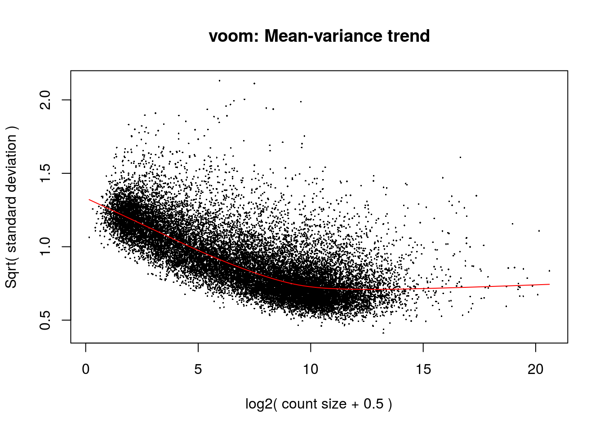
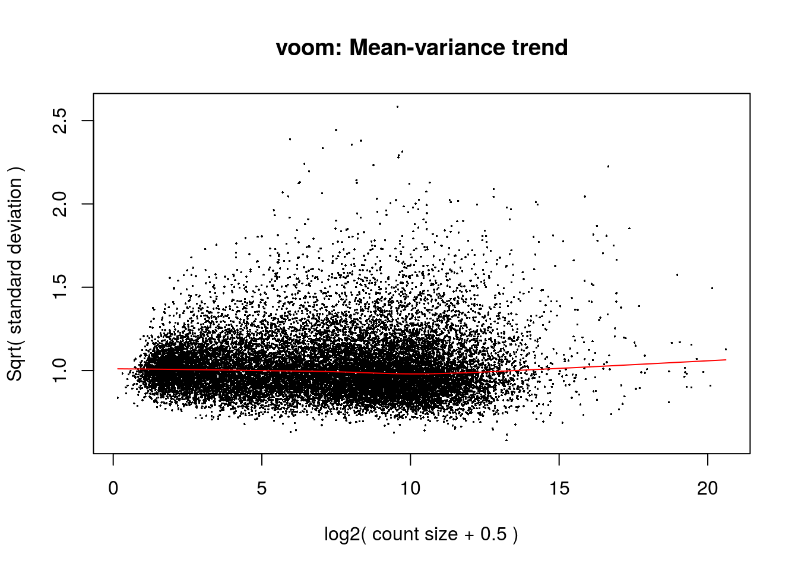
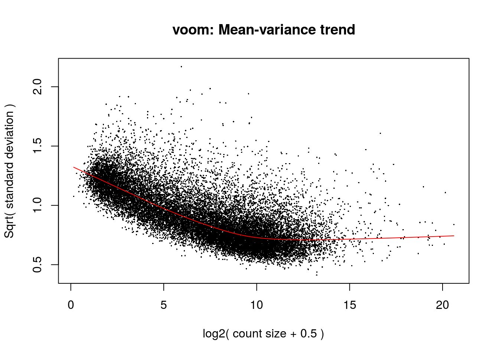
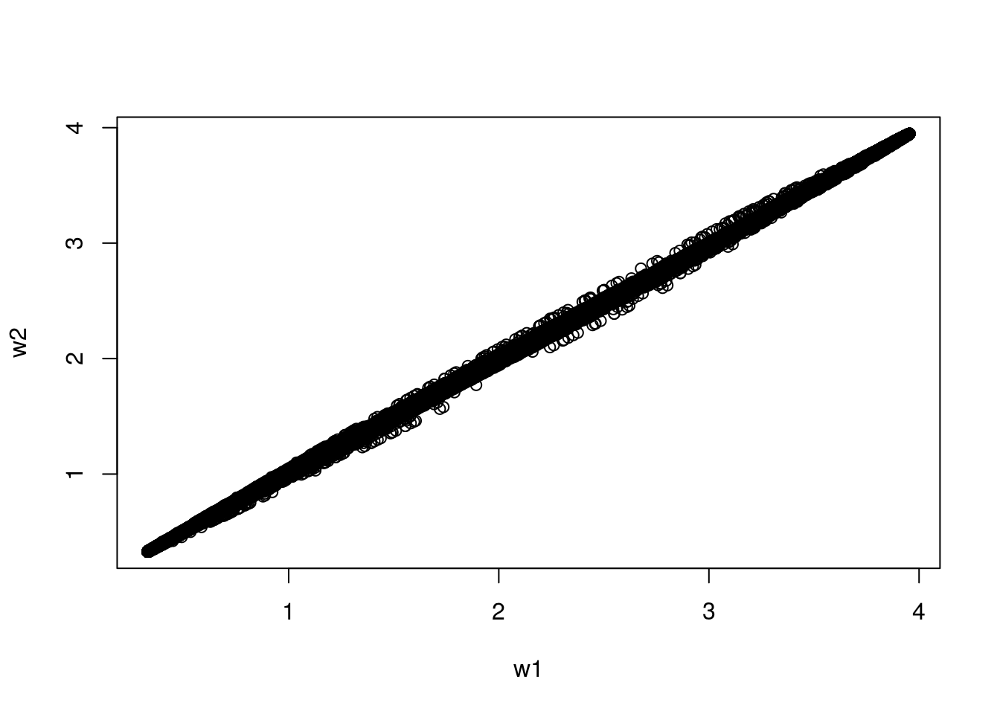
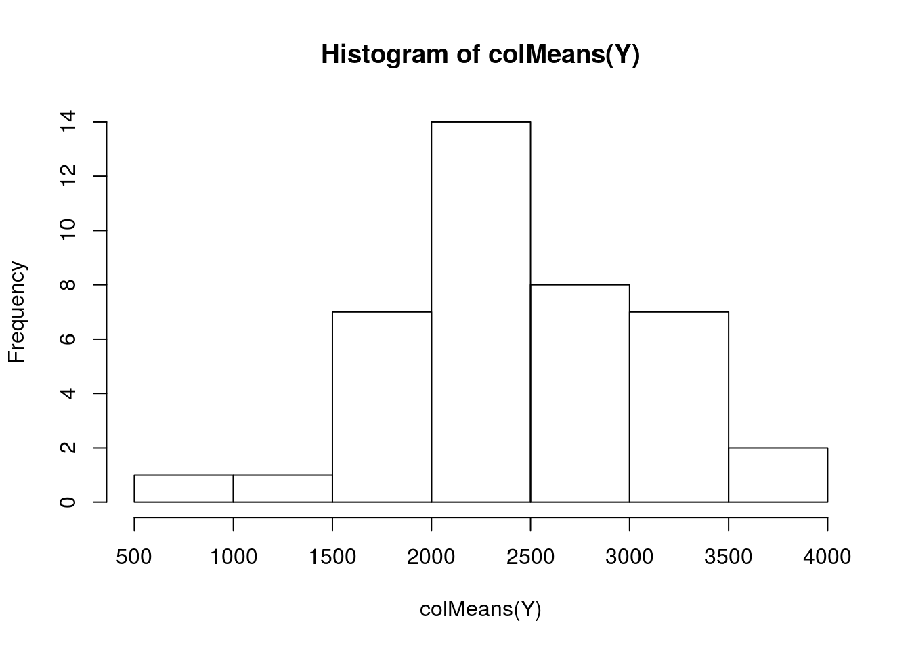
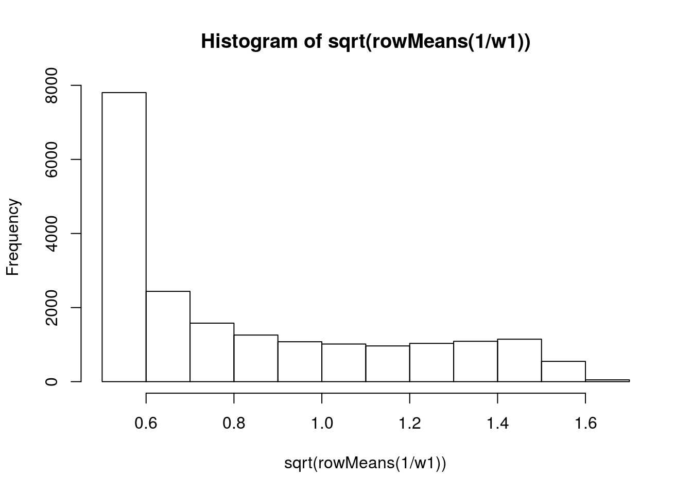
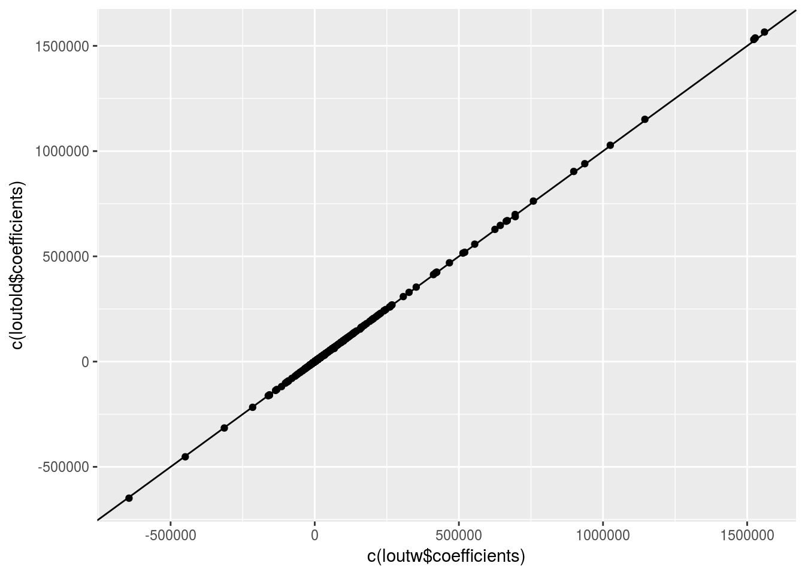
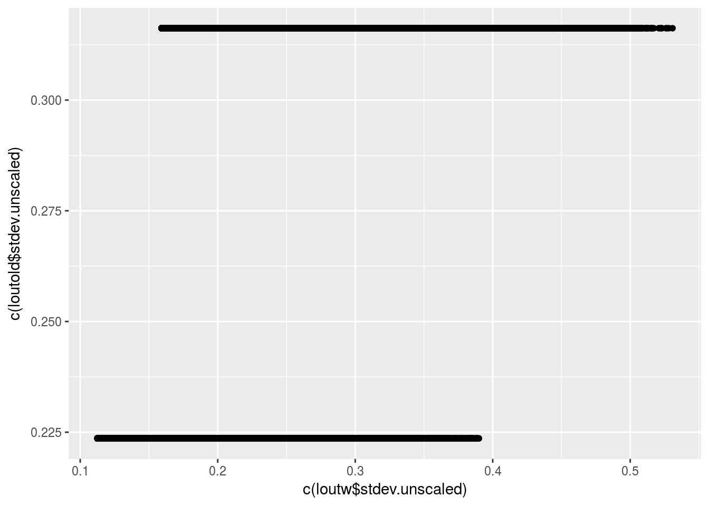

Iterate Voom
David Gerard
March 10, 2017
Abstract
This is the same thing as here but I add signal to all ofthe genes instead of to none of the genes.
Read in Data
library(seqgendiff)
muscle <- as.matrix(read.csv("../data/muscle.csv")[-c(1:2)])
dat <- poisthin(mat = t(muscle), prop_null = 0, ngene = 20000, nsamp = 40)
rm(muscle)
Y <- t(dat$Y)
X <- dat$XNote that VOOM doesn’t do anything unless you have a lot of low expressed genes
library(limma)
vout <- voom(counts = Y, design = X, plot = TRUE)
w1 <- vout$weightsYou can actually insert extra arguments into the voom function. My guess is that they did this to see if iterating between weights and voom fits did anything and they determined it in the negative.
vout <- voom(counts = Y, design = X, plot = TRUE, weights = w1)
lout <- lmFit(object = Y, design = X, weights = w1)It makes sense that the trend is completely gone, because each sigma_j is not the actual variance, it’s the variance left over after you remove the w_{ij}. It would make more sense to look at using the row averages of the sqrt(1 / weights) times the sigma_j’s. I am going to change just that line.
myvoom <-function (counts, design = NULL, lib.size = NULL, normalize.method = "none", span = 0.5, plot = FALSE, save.plot = FALSE, weights, ...)
{
out <- list()
if (is(counts, "DGEList")) {
out$genes <- counts$genes
out$targets <- counts$samples
if (is.null(design) && diff(range(as.numeric(counts$sample$group))) >
0)
design <- model.matrix(~group, data = counts$samples)
if (is.null(lib.size))
lib.size <- with(counts$samples, lib.size * norm.factors)
counts <- counts$counts
}
else {
isExpressionSet <- suppressPackageStartupMessages(is(counts,
"ExpressionSet"))
if (isExpressionSet) {
if (length(Biobase::fData(counts)))
out$genes <- Biobase::fData(counts)
if (length(Biobase::pData(counts)))
out$targets <- Biobase::pData(counts)
counts <- Biobase::exprs(counts)
}
else {
counts <- as.matrix(counts)
}
}
n <- nrow(counts)
if (n < 2L)
stop("Need at least two genes to fit a mean-variance trend")
if (is.null(design)) {
design <- matrix(1, ncol(counts), 1)
rownames(design) <- colnames(counts)
colnames(design) <- "GrandMean"
}
if (is.null(lib.size))
lib.size <- colSums(counts)
y <- t(log2(t(counts + 0.5)/(lib.size + 1) * 1e+06))
y <- normalizeBetweenArrays(y, method = normalize.method)
### Change this to explicitly take weights ----------------------
fit <- lmFit(y, design, weights = weights, ...)
if (is.null(fit$Amean))
fit$Amean <- rowMeans(y, na.rm = TRUE)
sx <- fit$Amean + mean(log2(lib.size + 1)) - log2(1e+06)
### Chnage sy to include rowmeans of weights --------------------
rmeanw <- sqrt(1 / rowMeans(weights))
sy <- sqrt(fit$sigma * rmeanw)
allzero <- rowSums(counts) == 0
if (any(allzero)) {
sx <- sx[!allzero]
sy <- sy[!allzero]
}
l <- lowess(sx, sy, f = span)
if (plot) {
plot(sx, sy, xlab = "log2( count size + 0.5 )", ylab = "Sqrt( standard deviation )",
pch = 16, cex = 0.25)
title("voom: Mean-variance trend")
lines(l, col = "red")
}
f <- approxfun(l, rule = 2)
if (fit$rank < ncol(design)) {
j <- fit$pivot[1:fit$rank]
fitted.values <- fit$coef[, j, drop = FALSE] %*% t(fit$design[,
j, drop = FALSE])
}
else {
fitted.values <- fit$coef %*% t(fit$design)
}
fitted.cpm <- 2^fitted.values
fitted.count <- 1e-06 * t(t(fitted.cpm) * (lib.size + 1))
fitted.logcount <- log2(fitted.count)
w <- 1/f(fitted.logcount)^4
dim(w) <- dim(fitted.logcount)
out$E <- y
out$weights <- w
out$design <- design
if (is.null(out$targets))
out$targets <- data.frame(lib.size = lib.size)
else out$targets$lib.size <- lib.size
if (save.plot) {
out$voom.xy <- list(x = sx, y = sy, xlab = "log2( count size + 0.5 )",
ylab = "Sqrt( standard deviation )")
out$voom.line <- l
}
new("EList", out)
}w2 <- w1
for (index in 1:10) {
v2out <- myvoom(counts = Y, design = X, weights = w2, plot = TRUE)
w2 <- v2out$weights
}


Plot the differences in the weights
plot(w1, w2)
No real difference, maybe the library sizes aren’t all too different? Nope, they are pretty different.
hist(colMeans(Y))
What do the rowmeans of the w’s look like?
hist(sqrt(rowMeans(1 / w1)))
loutw <- lmFit(object = Y, design = X, weights = w1)
loutold <- lmFit(object = Y, design = X)
library(ggplot2)
qplot(c(loutw$coefficients), c(loutold$coefficients)) +
geom_abline(intercept = 1, slope = 1)
qplot(c(loutw$stdev.unscaled), c(loutold$stdev.unscaled)) +
geom_abline(intercept = 1, slope = 1)
the coefficients look almost the exact same with and without the voom weights.
sessionInfo()## R version 3.3.2 (2016-10-31)
## Platform: x86_64-pc-linux-gnu (64-bit)
## Running under: Ubuntu 16.04.2 LTS
##
## locale:
## [1] LC_CTYPE=en_US.UTF-8 LC_NUMERIC=C
## [3] LC_TIME=en_US.UTF-8 LC_COLLATE=en_US.UTF-8
## [5] LC_MONETARY=en_US.UTF-8 LC_MESSAGES=en_US.UTF-8
## [7] LC_PAPER=en_US.UTF-8 LC_NAME=C
## [9] LC_ADDRESS=C LC_TELEPHONE=C
## [11] LC_MEASUREMENT=en_US.UTF-8 LC_IDENTIFICATION=C
##
## attached base packages:
## [1] stats graphics grDevices utils datasets methods base
##
## other attached packages:
## [1] ggplot2_2.2.1 limma_3.26.9 seqgendiff_0.1.0
##
## loaded via a namespace (and not attached):
## [1] Rcpp_0.12.9 knitr_1.15.1 magrittr_1.5 munsell_0.4.3
## [5] colorspace_1.3-2 stringr_1.1.0 plyr_1.8.4 tools_3.3.2
## [9] grid_3.3.2 gtable_0.2.0 htmltools_0.3.5 yaml_2.1.14
## [13] lazyeval_0.2.0 assertthat_0.1 rprojroot_1.2 digest_0.6.11
## [17] tibble_1.2 evaluate_0.10 rmarkdown_1.3 labeling_0.3
## [21] stringi_1.1.2 scales_0.4.1 backports_1.0.5This R Markdown site was created with workflowr